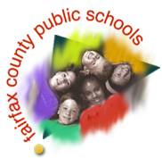

Fairfax County Public Schools  is one of the top school systems in the nation. It has been recognized for its excellence in education and meets or exceeds state and federal guidelines with talented and committed teachers and support personnel as well as state-of-the-art internet connectivity in all classrooms.
We have living proof of how great Fairfax County Schools are right here in our own neighborhood.
From our homes have come valedictorians, countless honor roll students from elementary school right up to high school, winners in local, county, regional, state, and international science fairs, as well as National Merit Scholars. Our kids have served and Smithsonian interns and Congressional pages. When it’s time for college, our kids have gone to Cornell, MIT, UVA, William and Mary, George Mason, the Naval Academy. And the list goes on.
We are proud of every one of our kids and are grateful that the local schools serve every one of our kids well. Drive through the community and you’ll see a whole bunch of bumper stickers announcing our pride.
For information about private schools in northern Virginia, click here.
There’s ample opportunity to learn at the local, state,
and D.C. colleges and universities.